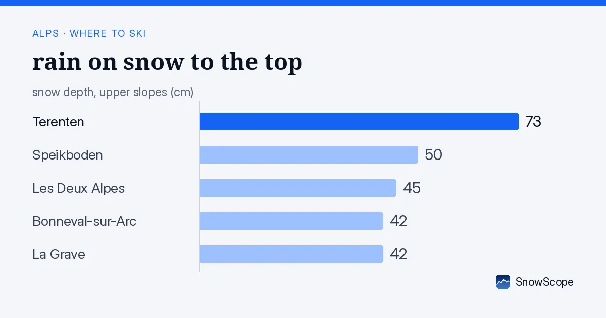

Terenten 73 cm: rain on snow to the top
Terenten leads the tracked resorts with 73 cm on its upper slopes today. The freezing level will climb to 2970 m on Thursday, bringing rain all the way to the top at 1381 m.
See the live snow forecast for Terenten in the SnowScope appSnow depth, powder alerts and the 3D map, free.
Terenten now: estimated 73 cm but hard to verify
Terenten ranks first with an estimated 73 cm on upper slopes around 1308 metres elevation. The latest satellite image from 1 November was unclear—cloud cover or poor resolution—so we rely on our snow model based on regional temperature and precipitation data.
The nearest snow station (Fadner Alm, 2155 metres, 11.9 km away) measured 2 cm on that same day, which is consistent with snow being present but thin. For comparison, Speikboden to the south holds 50 cm and was clearly visible from space.
Terenten's advantage exists on paper; on the ground it may be thinner, especially where rocks poke through the cover.
| Resort | Snow depth | New snow, 72 h | Coming, next days | Top |
|---|---|---|---|---|
| Terenten | 73 cm | 0 cm | 0 cm | 1,381 m |
| Speikboden | 50 cm | 0 cm | 1 cm | 2,398 m |
| Les Deux Alpes | 45 cm | 2 cm | 24 cm | 3,511 m |
| Bonneval-sur-Arc | 42 cm | 9 cm | 15 cm | 2,948 m |
| La Grave | 42 cm | 3 cm | 28 cm | 3,543 m |

The region today: 760 resorts have snow, but thinly spread
Only 760 of 1178 Alpine resorts show any snow at all. The snow-covered area is 43150 square kilometres, a small rise from 36920 square kilometres two days earlier. This recovery reflects the recent cold snap, but the picture remains fragmented.
Most snow sits above 2000 metres where it stays frozen; below that, the race against time is on. Speikboden (50 cm), Bonneval-sur-Arc (42 cm), and La Grave (42 cm) also lead locally, but all three face the same question: what happens when the thaw comes?
The thaw arrives Thursday: freezing level to 2970 m
Our forecast for Thursday 5 November shows the freezing level climbing steeply to 2970 metres. Terenten's summit is at 1381 metres—well below that threshold. Rain will fall across the whole mountain.
This is a sharp shift from the dry snow of recent days. It is not forecast to be heavy by Alpine standards, but rain percolating through 73 centimetres of thin snow pack is a serious concern. Water will reach depth quickly and can destabilise slopes.
Friday 6 November sees more rain; the thaw persists until Saturday 7 November, when the freezing level drops back to 1960–2090 metres and the air cools again.
What rain does to thin snow
Rain on thin snow is not theoretical risk; it has mechanical consequences. Water running through the pack lubricates weak layers and can trigger slides.
At 73 centimetres, the snow offers little thermal buffering, so rain will reach the base fast. Rocks will poke through the cover. The official avalanche bulletin for the region will reflect this hazard on 5 and 6 November.
Anyone skiing off-piste on those days must read it; the numbers matter.
Higher resorts fare better
Not all Alps face the same outlook. La Grave reaches 3543 metres; its top will stay above the freezing level even at 2970 metres. Our model forecasts 22 cm of new snow there on 6 November—proper winter snow, not rain.
Les Deux Alpes (3511 metres) has only 45 cm now but is expected to gain 24 cm, mostly on 6 November. These high peaks will improve sharply. Terenten and lower resorts lose ground.
The snow-covered area will shrink from 43150 to 31110 square kilometres by 7 November as the thaw spreads.
What to watch next
By Saturday 7 November, cooler air moves in and the freezing level retreats. But the damage to lower mountains will be done.
Terenten's 73 centimetre cover, thin to begin with, faces rain to the summit. If the rain is steady, that snow will degrade into wet slush or vanish entirely.
The next winter cold spell will determine whether lower resorts can recover. For now, the advantage has shifted to the high peaks. Use SnowScope to track the shifts across the region over the next 48 hours.
Tips for skiers
- Check the official avalanche bulletin for your region before skiing off-piste on 5 or 6 November; rain on thin snow raises instability risk significantly.
- If you must visit Terenten on those days, stick to groomed slopes or lower terrain where water can drain safely.
- Higher resorts like La Grave and Les Deux Alpes will be better options; both are forecast to gain over 20 cm of new snow on 6 November.
- After 7 November, monitor SnowScope for any recovery as cooler air returns and the freezing level drops back below 2000 metres.
- Track regional snow-covered area over the next 48 hours; it will shrink from 43150 to 31110 square kilometres as the thaw spreads.
About these numbers
Resort snow depths are the deepest snow on the resort's upper slopes from the SnowScope snow model (about 1 km, run of 4 November); they are estimates for an area, not a measurement at one point. Station values are measurements on the date shown. Forecasts can change. Always read the official avalanche bulletin before going off-piste.
Official avalanche bulletins: EAWS (Alps)
Cite this report
For research, teaching or the press: the numbers and charts are free to reuse under CC BY 4.0 with this citation.
SnowScope (2026), Terenten 73 cm: rain on snow to the top, https://snowscope.app/blog/en/2026/11/alps-snow-depth-today-4-november-2026.html, accessed 2026-11-04
SnowScope (Atlas Labs). (2026, November 4). Terenten 73 cm: rain on snow to the top. SnowScope snow reports. https://snowscope.app/blog/en/2026/11/alps-snow-depth-today-4-november-2026.html
BibTeX
@misc{snowscope2026alpssnowdepthtoday4novem,
author = {{SnowScope (Atlas Labs)}},
title = {Terenten 73 cm: rain on snow to the top},
year = {2026},
month = nov,
howpublished = {\url{https://snowscope.app/blog/en/2026/11/alps-snow-depth-today-4-november-2026.html}},
note = {Published 2026-11-04 14:49 UTC; accessed 2026-11-04}
}· CC BY 4.0 · Methods, data and tools →
Terenten: snow and temperature by height, this winter vs last (tools) →
Follow Terenten
Free: a message when fresh snow is coming, and the forecast every morning.
More snow reports

Bonneval-sur-Arc shows 52 cm upper slopes on 8 November. Weeks 10-11 are peak snow months. See what to pack for the forecast.

Les 2 Alpes reaches 3511 m for high snow in December 2026, with an adult 6-day pass priced at 266.50 EUR.

On 4 November, Les Deux Alpes has 45 centimetres at the summit but zero at the base—an extreme early-season height gap.